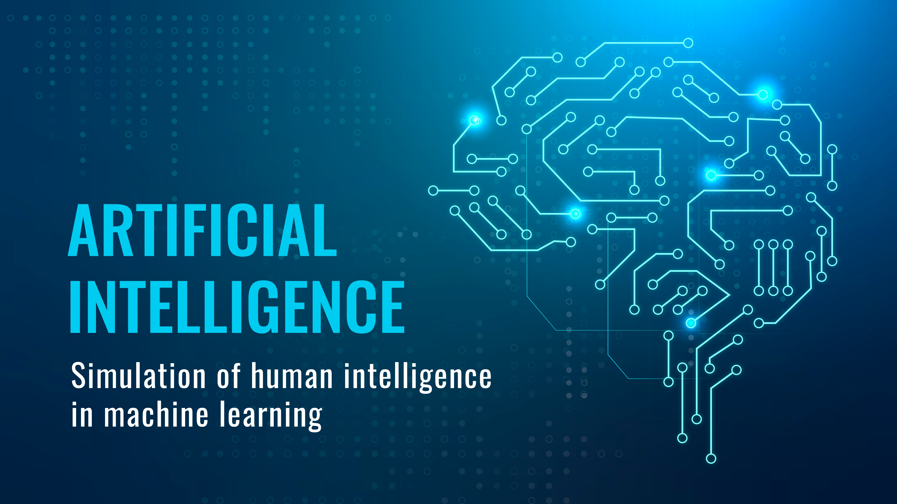

AI
Collaborative Intelligence: Uniting Human and AI for a Smarter Future
3 aug 2023
n the ever-evolving landscape of technology, the synergy between humans and Artificial Intelligence (AI) stands as a testament to our capacity to innovate and adapt. .
MKHB

AI
The Evolution of AI: From Science Fiction to Reality
6 Feb 2023
The realm of artificial intelligence (AI) has transitioned from being a mere concept in science fiction novels to becoming an integral part of our daily lives. As technology advances at an unprecedented pace, AI continues to transform industries, reshape economies, and raise intriguing ethical questions. In this blog post, we will delve into the journey of AI, exploring its historical origins, present applications, and potential future implications.
MKHB

Tech
Navigating the Cloud: A Comprehensive Guide to Understanding Cloud Technology
12 jan 2023
n today's rapidly evolving technological landscape, cloud technology has emerged as a cornerstone for businesses, organizations, and individuals alike. The cloud has transformed the way we store, access, and manage data, applications, and services
MKHB

AI
Unveiling the Unseen: The AI that Works Behind Humans
12 Feb 2022
In the modern era, the prevalence of artificial intelligence (AI) is undeniable. From recommendation systems on streaming platforms to advanced medical diagnostics, AI has seamlessly integrated itself into various aspects of our lives.
MKHB

AI
Unleashing the Potential: The Profound Importance of AI in Our World
11 march 2022
n the rapidly evolving landscape of technology, Artificial Intelligence (AI) has emerged as a game-changer, influencing virtually every aspect of our lives. From transforming industries to enhancing daily conveniences, AI's significance cannot be overstated
MKHB
News
"Unveiling the Future: Exploring the Possibilities and Challenges of 6G Technology
12 july 2022
In this rapidly evolving digital age, technological advancements continue to reshape the world as we know it. The latest buzz is all about 6G – the sixth generation of wireless technology that promises to revolutionize connectivity, communication, and beyond.
MKHB

AI
Demystifying Machine Learning: A Journey into My Personal Exploration
1 aug 2022
In an era dominated by technological advancements, the term "Machine Learning" has become increasingly familiar, but its inner workings and potential applications can still appear daunting to many. As someone curious about the world of technology and eager to learn, I embarked on a journey to unravel the complexities of Machine Learning (ML) and discover its practical significance.
MKHB
News
Unveiling Tomorrow: Exploring the Promising Horizons of Future Artificial Intelligence
18 Feb 2022
In a world rapidly embracing technological innovations, the future of artificial intelligence (AI) emerges as a tantalizing frontier that holds boundless potential.
MKHB

Tech
Navigating the Technological Landscape of Today: Trends and Transformations
12 jan 2021
In the rapidly evolving digital age, technology has become an integral part of our daily lives, shaping the way we work, communicate, and interact with the world around us.
MKHB